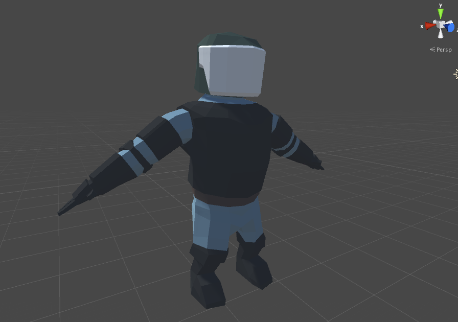

A.C.A.B. remake #1
Перенос “A.C.A.B.” в лоу-поли 3D по шагам
Предыстория: после “релиза экспериментальной бета-версии Unity3D на православную платформу” начал думать, чего бы такое начать снова разрабатывать. Думал долго, месяца 3, в процессе понял, что пиксельарт надоел, надо бы научиться моделить хотя бы среднее лоу-поли. И в результате пришла мысль перенести первую свою поделку на 3D-модели и где-то описывать все шаги.
Первым делом начал учиться моделить и красить. Первый блин - модель “омоновца”

А так он выглядит в редакторе Unity3D

Где-то на этом этапе я понял что это не такое и лоу-поли, и придётся переделывать. Но я решил продолжить с другой модели, бунтовщика.
Так он выглядит до покраски:

Голова спереди-слева:

Голова сзади-слева:

Пока это всё. Бунтовщика осталось покрасить и можно заниматься самым интересным и сложным - добавлением скелета и анимацией